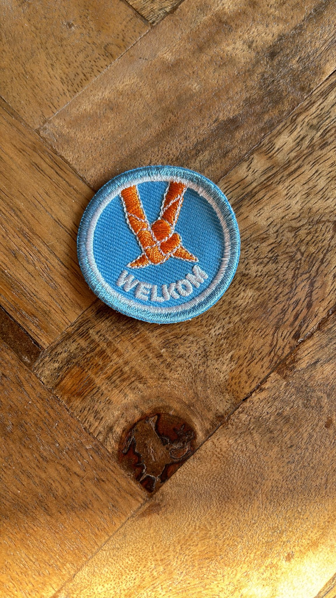

-
UK Queen's DeathThis badge was available after the Queen's death in 2022.united kingdom
-
The Hampshire HogsThis was the unit badge for Unit 62, The Hampshire Hogs from the UK for the WSJ in South Korea 2023.united kingdom
-
Badge NameBadge info.....Country